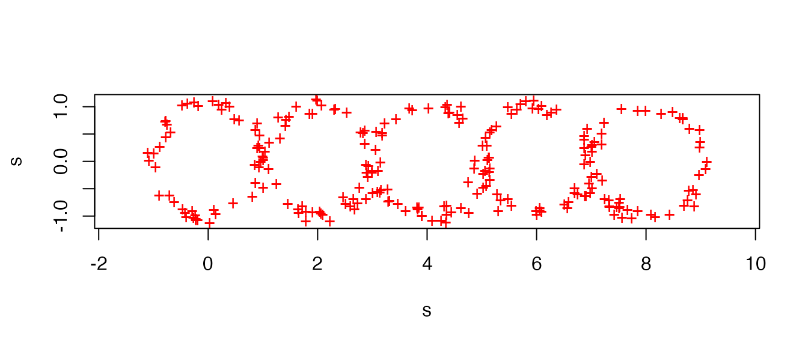
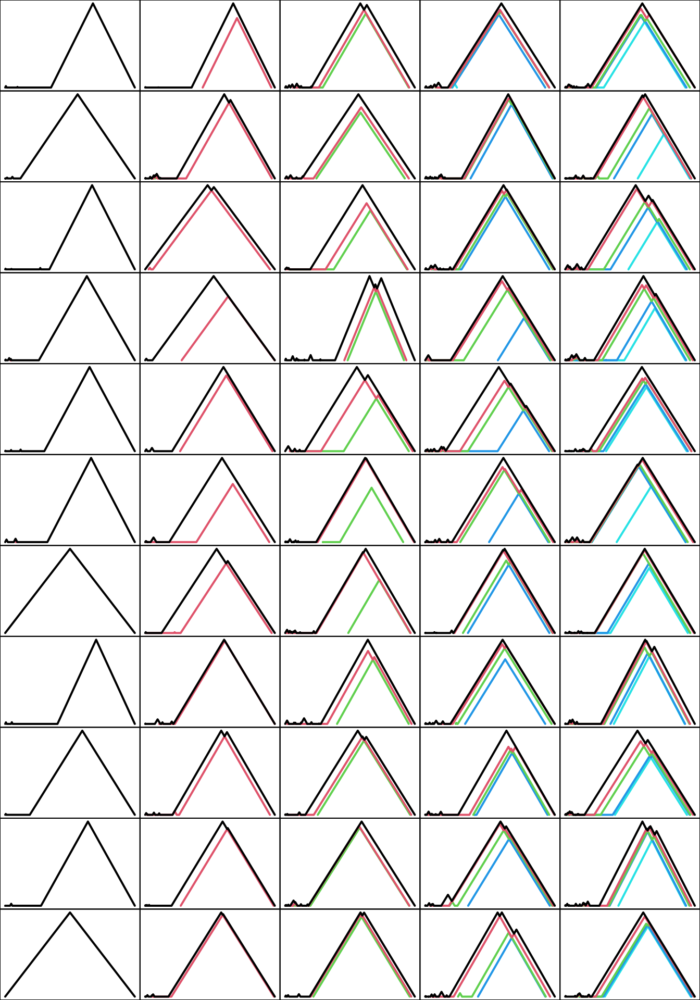

toy-example.RmdThis vignette reproduces the analysis of a toy example in Sections 5.2–5.7 of Bubenik and Dłotko (2017).1
library(plt)The purpose of this example is to illustrate the Persistence Landscapes Toolbox for summarizing and discriminating among point cloud data based on their persistent homology. The toy data comprise several point clouds sampled from unions of pairwise tangent unit circles; see the example after the sampler below (c.f. Section 5.2):
# sample `50 * n` points from `n` concatenated circles with uniform noise
sample_tangent_circles <- function(n) {
# bind rows from several samples
do.call(rbind, lapply(seq(0L, n - 1L), function(m) {
# sample from the unit circle
tdaunif::sample_circle(n = 50L) +
# shift this circle `m` units rightward
matrix(rep(c(2 * m, 0), each = 50L), ncol = 2L) +
# add uniform noise
matrix(runif(n = 50L * 2L, min = -0.15, max = 0.15), ncol = 2L)
}))
}
# illustrate with a 5-circle sequence
plot(sample_tangent_circles(n = 5L), pch = "+", col = "red", asp = 1)
Here we generate all \(5 * 11 = 55\) samples and store their degree-1 persistence landscapes. We include a scale factor that recovers landscapes at the same scale as those reported in the paper:
# define scale factor
sf <- 55
# initialize list
toy_pl <- vector("list", 5L)
# populate each position in the list
for (n in seq_along(toy_pl)) {
# initialize sub-list
toy_n <- vector("list", 11L)
# draw 11 samples
for (i in seq(11L)) {
toy_data <- sample_tangent_circles(n)
# scale data by scale factor
toy_data[, ] <- toy_data[, ] * sf
# calculate persistent homology, up to the diameter of the subspace
ph <- suppressWarnings(
ripserr::vietoris_rips(toy_data, dim = 1, threshold = n * 2 * sf)
)
# format as persistence data
pd <- as_persistence(ph)
# construct degree-1 persistence landscape
pl <- landscape(pd, degree = 1L, exact = TRUE)
# store the landscape
toy_n[[i]] <- pl
}
toy_pl[[n]] <- toy_n
}Each landscape contains as many significant levels as circles made up the sample space. In the plots below, tick marks are omitted to make more space for the landscapes themselves:
par(mfcol = c(11L, 5L), mar = c(0, 0, 0, 0))
for (n in seq_along(toy_pl)) for (i in seq_along(toy_pl[[n]])) {
plot(toy_pl[[n]][[i]], xaxt = "n", yaxt = "n")
}
The commonalities of the samples from each space can be revealed by taking their mean landscapes (c.f. Section 5.4):
# calculate means
toy_pl_mean <- lapply(toy_pl, pl_mean)
# plot means
par(mfcol = c(1L, 5L), mar = c(0, 0, 0, 0))
for (n in seq_along(toy_pl_mean)) {
plot(toy_pl_mean[[n]], xaxt = "n", yaxt = "n")
}Below we compute the \(1\)-, \(2\)-, and \(\infty\)-norms of these mean landscapes (c.f. Section 5.5):
# norms to calculate
ps <- c(1, 2, Inf)
# initialize matrix
toy_pl_norms <- matrix(NA_real_, nrow = 5L, ncol = 3L)
rownames(toy_pl_norms) <- paste0(seq(5L), "-circle")
colnames(toy_pl_norms) <- paste0("p = ", ps)
# populate matrix
for (n in seq_along(toy_pl_mean)) for (p in seq_along(ps)) {
# calculate norm
toy_pl_norms[n, p] <- pl_norm(toy_pl_mean[[n]], ps[[p]])
}
# print matrix
print(toy_pl_norms)
#> p = 1 p = 2 p = Inf
#> 1-circle 797.6847 120.3623 25.88779
#> 2-circle 1525.4029 161.5856 26.58684
#> 3-circle 2574.0734 222.6504 30.41705
#> 4-circle 3491.3347 261.2854 31.37219
#> 5-circle 4385.9519 293.4047 31.59404Below we compute the pairwise \(2\)-distances between the mean landscapes (c.f. Section 5.6):
# compute distance matrix
pl_dist(toy_pl_mean)
#> [,1] [,2] [,3] [,4] [,5]
#> [1,] 0.00000 98.40555 170.2286 215.8823 250.0759
#> [2,] 98.40555 0.00000 111.8131 168.8932 209.5252
#> [3,] 170.22856 111.81312 0.0000 103.7451 156.4421
#> [4,] 215.88232 168.89324 103.7451 0.0000 99.9517
#> [5,] 250.07587 209.52523 156.4421 99.9517 0.0000Section 5.7 reports that permutation tests between the sample landscapes from different numbers \(n\) of circles all obtained p-values near zero, successfully detecting the differences between the samples. Below we report two permutation tests, between the samples \(n=1\) and \(n=2\) and between the samples \(n=4\) and \(n=5\):
# compare 1-circle and 2-circle samples
pl_perm_test(toy_pl[[1L]], toy_pl[[2L]])
#>
#> permutation test
#>
#> data:
#> p-value < 2.2e-16
#> alternative hypothesis: true distance between mean landscapes is greater than 0
#> sample estimates:
#> distance between mean landscapes
#> 98.40555
# compare 4-circle and 5-circle samples
pl_perm_test(toy_pl[[4L]], toy_pl[[5L]])
#>
#> permutation test
#>
#> data:
#> p-value < 2.2e-16
#> alternative hypothesis: true distance between mean landscapes is greater than 0
#> sample estimates:
#> distance between mean landscapes
#> 99.9517To test the specificity, rather than the sensitivity, of the permutation test, below we generate additional, smaller samples from the 1- and 5-circle spaces and perform permutation tests between them and their original counterparts from the same spaces:
# draw a new 1-circle sample
new_pl_1 <- vector("list", 6L)
for (i in seq(6L)) {
toy_data <- sample_tangent_circles(1)
toy_data[, ] <- toy_data[, ] * sf
ph <- suppressWarnings(
ripserr::vietoris_rips(toy_data, dim = 1, threshold = 1 * 2 * sf)
)
pd <- as_persistence(ph)
pl <- landscape(pd, degree = 1L, exact = TRUE)
new_pl_1[[i]] <- pl
}
# compare old & new 1-circle samples
pl_perm_test(toy_pl[[1L]], new_pl_1)
#>
#> permutation test
#>
#> data:
#> p-value = 0.428
#> alternative hypothesis: true distance between mean landscapes is greater than 0
#> sample estimates:
#> distance between mean landscapes
#> 15.67115
# draw a new 5-circle sample
new_pl_5 <- vector("list", 6L)
for (i in seq(6L)) {
toy_data <- sample_tangent_circles(5)
toy_data[, ] <- toy_data[, ] * sf
ph <- suppressWarnings(
ripserr::vietoris_rips(toy_data, dim = 1, threshold = 5 * 2 * sf)
)
pd <- as_persistence(ph)
pl <- landscape(pd, degree = 1L, exact = TRUE)
new_pl_5[[i]] <- pl
}
# compare old & new 5-circle samples
pl_perm_test(toy_pl[[5L]], new_pl_5)
#>
#> permutation test
#>
#> data:
#> p-value = 0.569
#> alternative hypothesis: true distance between mean landscapes is greater than 0
#> sample estimates:
#> distance between mean landscapes
#> 19.95555Bubenik P & Dłotko P (2017) “A persistence landscapes toolbox for topological statistics”. Journal of Symbolic Computation 78(1):91–114. https://www.sciencedirect.com/science/article/pii/S0747717116300104↩︎